Ajourné · Interval Palette · M05 asset review (not live)
The thirteen intervals
IPV-10 to IPV-22 map one-to-one to source cards IP-00 to IP-12 (IPV-10 = IP-00, not IP-10). Every painting is art only; every key, label and count comes from the source data.
IPV-10 · INTERVAL · ART + NATIVE
Perfect unison (P1) · source IP-00
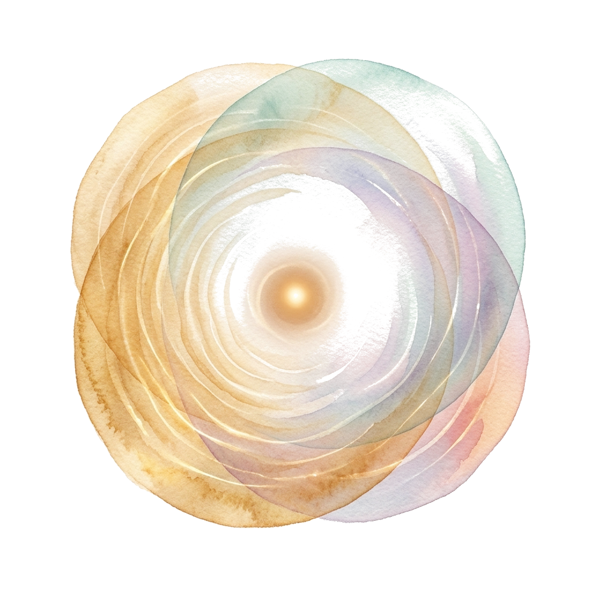
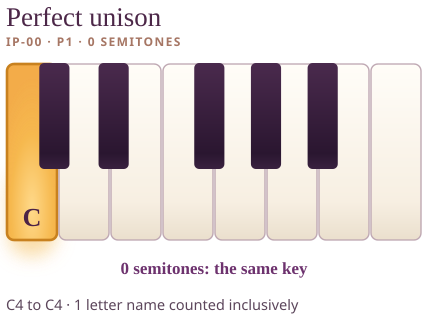
How to read the picture. The painting layers two voices on one place. The keyboard shows a single highlighted key because both notes are the same pitch.
On your own keyboard. Play C4 and sustain it, then play it again. Notice that nothing moved: the interval is zero.
Alt text of the exact figure
A piano keyboard from C4 to C5 with C4 highlighted (both notes are the same key). Perfect unison, P1: 0 semitones, counted as 0 one-key hops.IPV-11 · INTERVAL · ART + NATIVE
Minor second (m2) · source IP-01

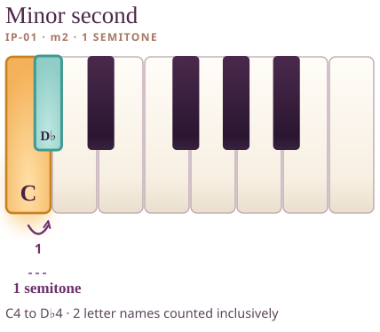
How to read the picture. The painting suggests the relationship; the keyboard is exact. C4 is the lower key and D♭4 is the upper key, 1 semitone apart. Follow the numbered hops from the lower key to the upper.
On your own keyboard. Play C4, then D♭4, one after another, then together. Count the hops yourself on the keys, then notice what you hear without judging it good or bad.
Alt text of the exact figure
A piano keyboard from C4 to C5 with C4 and D♭4 highlighted. Minor second, m2: 1 semitones, counted as 1 one-key hops.IPV-12 · INTERVAL · ART + NATIVE
Major second (M2) · source IP-02

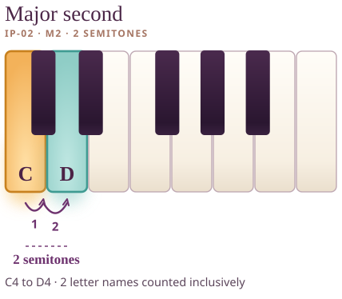
How to read the picture. The painting suggests the relationship; the keyboard is exact. C4 is the lower key and D4 is the upper key, 2 semitones apart. Follow the numbered hops from the lower key to the upper.
On your own keyboard. Play C4, then D4, one after another, then together. Count the hops yourself on the keys, then notice what you hear without judging it good or bad.
Alt text of the exact figure
A piano keyboard from C4 to C5 with C4 and D4 highlighted. Major second, M2: 2 semitones, counted as 2 one-key hops.IPV-13 · INTERVAL · ART + NATIVE
Minor third (m3) · source IP-03

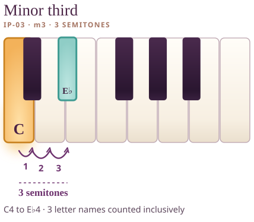
How to read the picture. The painting suggests the relationship; the keyboard is exact. C4 is the lower key and E♭4 is the upper key, 3 semitones apart. Follow the numbered hops from the lower key to the upper.
On your own keyboard. Play C4, then E♭4, one after another, then together. Count the hops yourself on the keys, then notice what you hear without judging it good or bad.
Alt text of the exact figure
A piano keyboard from C4 to C5 with C4 and E♭4 highlighted. Minor third, m3: 3 semitones, counted as 3 one-key hops.IPV-14 · INTERVAL · ART + NATIVE
Major third (M3) · source IP-04


How to read the picture. The painting suggests the relationship; the keyboard is exact. C4 is the lower key and E4 is the upper key, 4 semitones apart. Follow the numbered hops from the lower key to the upper.
On your own keyboard. Play C4, then E4, one after another, then together. Count the hops yourself on the keys, then notice what you hear without judging it good or bad.
Alt text of the exact figure
A piano keyboard from C4 to C5 with C4 and E4 highlighted. Major third, M3: 4 semitones, counted as 4 one-key hops.IPV-15 · INTERVAL · ART + NATIVE
Perfect fourth (P4) · source IP-05
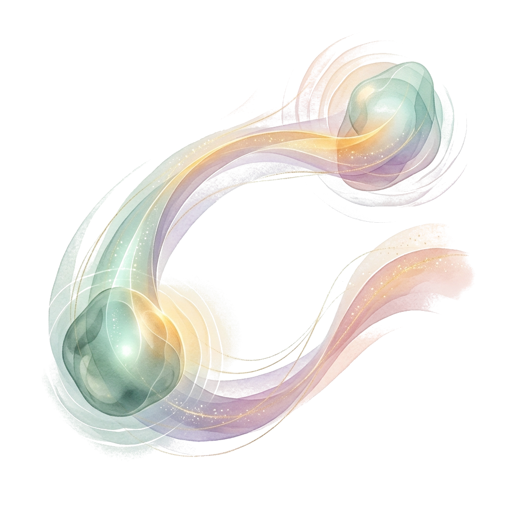
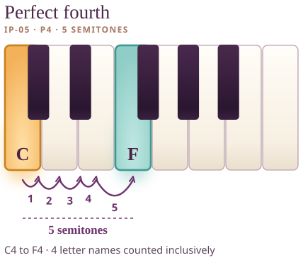
How to read the picture. The painting suggests the relationship; the keyboard is exact. C4 is the lower key and F4 is the upper key, 5 semitones apart. Follow the numbered hops from the lower key to the upper.
On your own keyboard. Play C4, then F4, one after another, then together. Count the hops yourself on the keys, then notice what you hear without judging it good or bad.
Alt text of the exact figure
A piano keyboard from C4 to C5 with C4 and F4 highlighted. Perfect fourth, P4: 5 semitones, counted as 5 one-key hops.IPV-16 · INTERVAL · ART + NATIVE
Tritone (A4/d5) · source IP-06
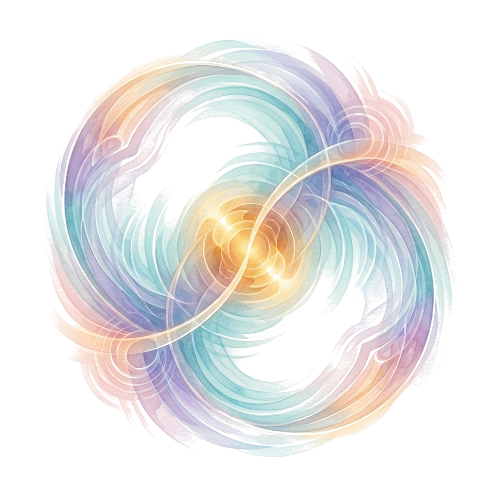
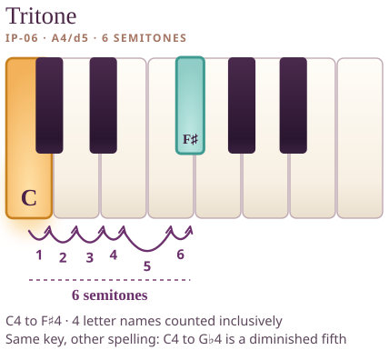
How to read the picture. The painting suggests the relationship; the keyboard is exact. C4 is the lower key and F♯4 is the upper key, 6 semitones apart. Follow the numbered hops from the lower key to the upper.
On your own keyboard. Play C4, then F♯4, one after another, then together. Count the hops yourself on the keys, then notice what you hear without judging it good or bad.
Alt text of the exact figure
A piano keyboard from C4 to C5 with C4 and F♯4 highlighted. Tritone, A4/d5: 6 semitones, counted as 6 one-key hops; the same key can also be written G♭4 as a diminished fifth.IPV-17 · INTERVAL · ART + NATIVE
Perfect fifth (P5) · source IP-07
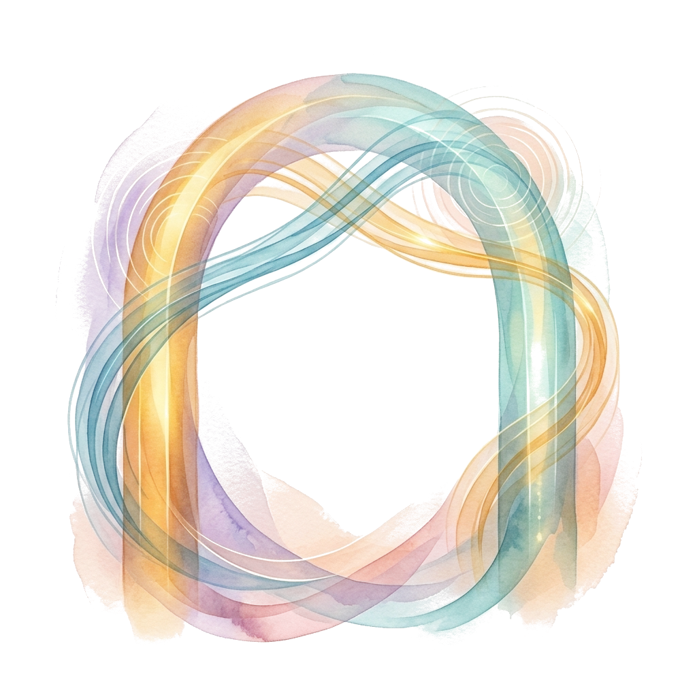
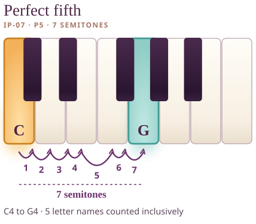
How to read the picture. The painting suggests the relationship; the keyboard is exact. C4 is the lower key and G4 is the upper key, 7 semitones apart. Follow the numbered hops from the lower key to the upper.
On your own keyboard. Play C4, then G4, one after another, then together. Count the hops yourself on the keys, then notice what you hear without judging it good or bad.
Alt text of the exact figure
A piano keyboard from C4 to C5 with C4 and G4 highlighted. Perfect fifth, P5: 7 semitones, counted as 7 one-key hops.IPV-18 · INTERVAL · ART + NATIVE
Minor sixth (m6) · source IP-08

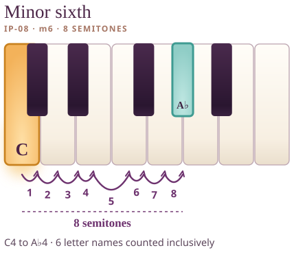
How to read the picture. The painting suggests the relationship; the keyboard is exact. C4 is the lower key and A♭4 is the upper key, 8 semitones apart. Follow the numbered hops from the lower key to the upper.
On your own keyboard. Play C4, then A♭4, one after another, then together. Count the hops yourself on the keys, then notice what you hear without judging it good or bad.
Alt text of the exact figure
A piano keyboard from C4 to C5 with C4 and A♭4 highlighted. Minor sixth, m6: 8 semitones, counted as 8 one-key hops.IPV-19 · INTERVAL · ART + NATIVE
Major sixth (M6) · source IP-09

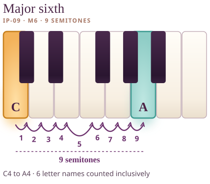
How to read the picture. The painting suggests the relationship; the keyboard is exact. C4 is the lower key and A4 is the upper key, 9 semitones apart. Follow the numbered hops from the lower key to the upper.
On your own keyboard. Play C4, then A4, one after another, then together. Count the hops yourself on the keys, then notice what you hear without judging it good or bad.
Alt text of the exact figure
A piano keyboard from C4 to C5 with C4 and A4 highlighted. Major sixth, M6: 9 semitones, counted as 9 one-key hops.IPV-20 · INTERVAL · ART + NATIVE
Minor seventh (m7) · source IP-10

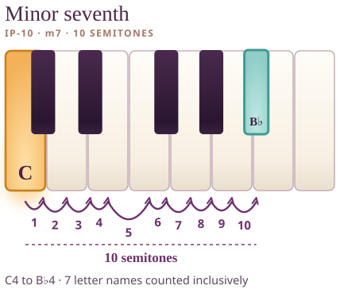
How to read the picture. The painting suggests the relationship; the keyboard is exact. C4 is the lower key and B♭4 is the upper key, 10 semitones apart. Follow the numbered hops from the lower key to the upper.
On your own keyboard. Play C4, then B♭4, one after another, then together. Count the hops yourself on the keys, then notice what you hear without judging it good or bad.
Alt text of the exact figure
A piano keyboard from C4 to C5 with C4 and B♭4 highlighted. Minor seventh, m7: 10 semitones, counted as 10 one-key hops.IPV-21 · INTERVAL · ART + NATIVE
Major seventh (M7) · source IP-11

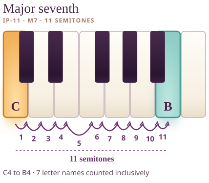
How to read the picture. The painting suggests the relationship; the keyboard is exact. C4 is the lower key and B4 is the upper key, 11 semitones apart. Follow the numbered hops from the lower key to the upper.
On your own keyboard. Play C4, then B4, one after another, then together. Count the hops yourself on the keys, then notice what you hear without judging it good or bad.
Alt text of the exact figure
A piano keyboard from C4 to C5 with C4 and B4 highlighted. Major seventh, M7: 11 semitones, counted as 11 one-key hops.IPV-22 · INTERVAL · ART + NATIVE
Perfect octave (P8) · source IP-12
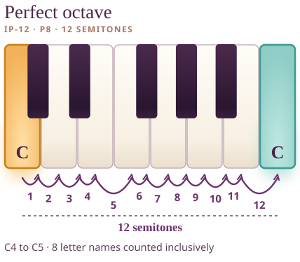
How to read the picture. The painting suggests the relationship; the keyboard is exact. C4 is the lower key and C4 is the upper key, 12 semitones apart. Follow the numbered hops from the lower key to the upper.
On your own keyboard. Play C4, then C5, one after another, then together. Count the hops yourself on the keys, then notice what you hear without judging it good or bad.